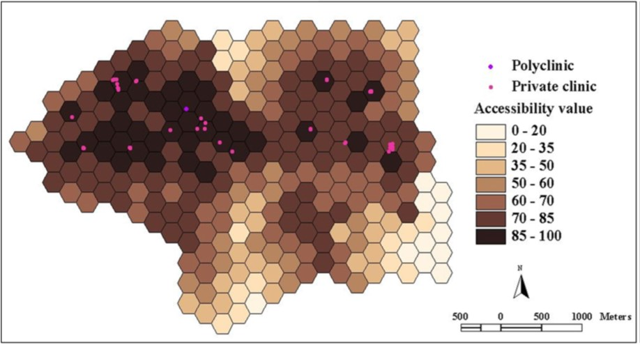

Content
- Basic Concepts of Geography of Accessibility
- Accessibility Models
- Stewart Potential model
- Reilly model
- Huff model
15 Aug 2025
Cartesian distance versus Network distance.
Reference: Philippe Apparicio et. al. (2017) “The approaches to measuring the potential spatial access to urban health services revisited: distance types and aggregation‑error issues. International Journal of Health Geographics, pp. 16:32.

The formula:

Limitation of the method:

Accessibility to health services

Reference: Luo, W.; Wang, F. (2003b). “Measures of spatial accessibility to health care in a GIS environment: synthesis and a case study in the Chicago region”. Environment and Planning B: Planning and Design. 30 (6): 865–884.
An earlier version of 2SFCA

Step 1: For each physician location j, search all population locations (k) that are within a threshold travel time (d0) from location j (that is, catchment area j ), and compute the physician-to-population ratio, Rj, within the catchment area:

An earlier version of 2SFCA
Step 2: For each population location i, search all physician locations (j) that are within the threshold travel time (d0) from location i (that is, catchment area i), and sum up the physician-to-population ratios, Rj, at these locations:
An earlier version of 2SFCA.
Step 1: The catchment of physician location j is defined as the area within 30-min driving zone(Lee, 1991). Within each catchment, compute three travel time zones with minute breaks of 0–10,10–20 and 20–30min (zones1–3,respectively). Search all population locations(k) that are within a threshold travel time zone (Dr) from location j (this is catchment area j), and compute the weighted physician-to-population ratio, Rj, within the catchment area as follows:

Step 2: For each population location i, search all physician locations (j) that are within the 30min travel time zone from location i (that is,catchment area i), and sum up the physician-to-population ratios (calculated in step1), Rj, at these locations as follows:
Reference: Luo, Wei., Qi, Yi. (2009) “An enhanced two-step floating catchment area (E2SFCA) method for measuring spatial accessibility to primary care physicians”, Health & Place, 2009, Vol.15 (4), p.1100-1107.